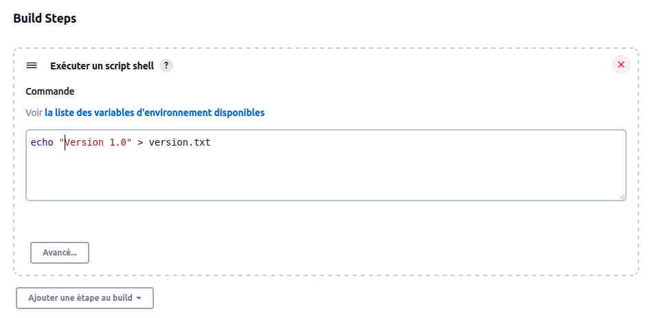

java -jar jenkins.warIntégration continue
Intégration continue S. Fauvel – Univ. Nantes 2022
Plan
Intégration
Entre le développement et la production ?

On appelle "intégration" tout ce qu’il reste à faire à une équipe projet, quand le travail de développement à proprement parler est terminé, pour obtenir un produit exploitable, "prêt à l’emploi".
— Institut Agile
Planning

Intégration

Planning

Planning
En pratique
Charge
 |  |
Les étapes à repasser sont une charge de travail supplémentaire
Temps
|  |
Chaque étape à refaire allonge le délai de livraison
Feedback
|  |
Le temps d’intégration éloigne d’autant le délai entre le développement et sa validation
Incertitude

1 constat
Intégration dans un cycle en V
Intégration dans une approche Agile
Intégration continue
Origine
Intégration continue
Automatiser la chaîne de build pour faire l’intégration de manière transparente

Bonnes pratiques
Bénéfices
Définitions
Outils
Jenkins

Jenkins
Jenkins - installation
Jenkins - jobs
Jenkins – Tableau de bord
Jenkins – Statut du job
Jenkins - jobs
Jenkins - jobs
Général
Gestion de code source
Gestion de code source
Ce qui déclenche le build

Jenkins - déclenchement
Jenkins – gestionnaire de configuration
Environnement de Build
Build
Build
Script shell |  |
Build Maven |  |
Jenkins – informations sur l’exécution
Jenkins – Tests
En cas d’échec des tests, l’état du build devient instable
Le résultat des tests est affiché
On peut accéder au rapport détaillé d’exécution des tests

Jenkins – Tendance
Actions à la suite du build
Jenkins – Notification
Il est possible (recommandé) d’envoyer une notification en cas d’échec du build
L’échec d’un build indique un problème qu’il faut régler au plus vite.
La notification ne doit pas être considérée comme une simple information mais comme une alerte.
D’autres moyens peuvent être utilisés pour signaler le problème |  |  |
La notification peut être 'ciblée' sur celui qui a cassé le build (nécessite d’ajouter les utilisateurs)
Jenkins – Exécution post build: Analyse de code
D’autres actions peuvent être réalisées en plus de la construction
On peut déclencher une analyse de code (Sonar, Checkstyle, …)
Le rapport d’analyse est généré et accessible via des plugins

Jenkins – Organisation des builds
Jenkins – Mode Maître / Esclave
Jenkins – Pipeline
Description du job sous forme de code
Permet la réutilisation
Historisation du job dans le gestionnaire de source
Exécution d’étapes en parallèle